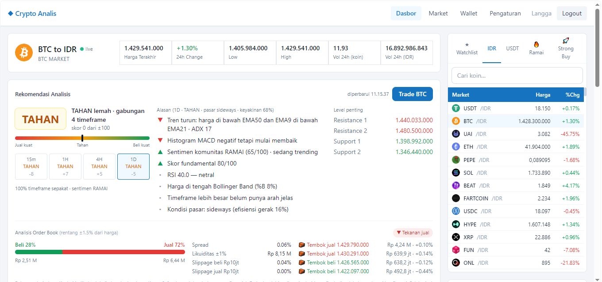

Crypto Analis
Dashboard harga kripto dalam Rupiah yang update secara live. Untuk tiap koin, sistem membaca indikator seperti EMA, MACD, RSI, dan Bollinger Band di empat timeframe, lalu menggabungkannya jadi satu saran: beli, tahan, atau jual. Ada juga analisis order book, level support/resistance, dan watchlist.
- Peran
- Desain, backend, frontend
- Stack
- Express.js, PostgreSQL, HTML, CSS, Tailwind
- Timeframe
- 15m, 1H, 4H, 1D
harganya live, jadi screenshot ini sudah basi